Maalritööd Tallinnas ja Harjumaal
Seinte ja lagede ettevalmistus, värvimine ning puhas lõppviimistlus.
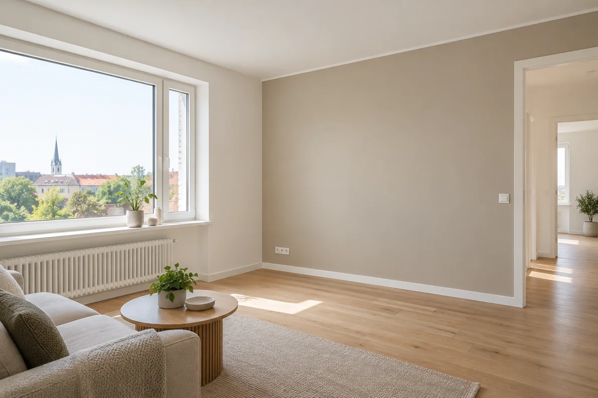
Maalritööde tulemuse määrab eelkõige aluspinna seisukord. Enne pakkumist vaatame üle paranduste, pahtelduse, lihvimise ja kruntimise vajaduse ning lepime kokku soovitud viimistlustaseme.
Maalritöö ei ole ainult värvi seinale kandmine. Kvaliteetne tulemus algab pragude, vuukide, kruvipeade, vana värvi ja aluspinna seisukorra hindamisest. Teeme maalritöid korterites, eramutes, büroodes ja äripindadel Tallinnas ning Harjumaal.
Meie eesmärk on saavutada ühtlane pind, sirged üleminekud ja puhas tööala. Vajadusel aitame valida värvitüübi, läikeastme ja toonilahenduse, mis sobib ruumi valguse, kasutuse ja hooldusvajadusega.
Mida teenus sisaldab?
- seinte ja lagede pahteldamine ning lihvimine
- kruntimine, värvimine ja toonivahetus
- pragude, nurkade ja üleminekute parandamine
- korterite, eramute ja äripindade siseviimistlus
Millal seda tellida?
Maalritöid tellitakse kõige sagedamini enne sissekolimist, üürikorteri värskendamist, vannitoa või köögi remondi järel ning äripinna uuendamisel. Korralik eeltöö hoiab ära hilisema koorumise ja nähtavad pahtlijooned.
Tööprotsess
Pinna ettevalmistus
Katame tööala, eemaldame lahtise värvi, täidame praod ja hindame, kas pind vajab lauspahteldust või kohtparandusi.
Krunt ja värvimine
Valime aluspinnale sobiva krundi ning värvime pindasid ühtlase kihina, jälgides kuivamisaegu ja valguse langemist.
Lõppkontroll
Kontrollime pinnad päevavalguse ja külgvalgusega, korrigeerime detailid ning jätame ruumi võimalikult puhtaks.
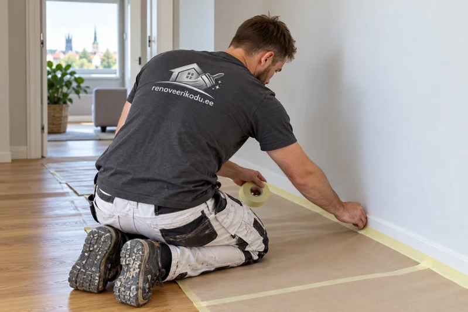
1. Tööala kaitsmine
Enne eeltöid kaitseme põrandad, mööbli ja viimistletud detailid. Servad teibime vastavalt pinnale, et tööala püsiks puhas.
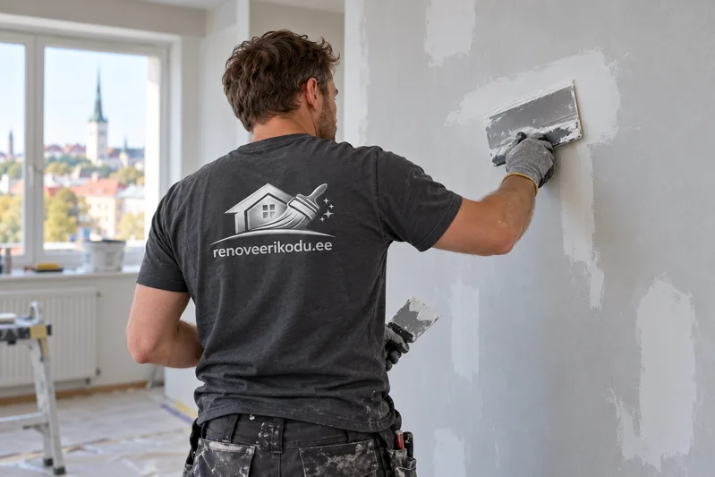
2. Parandused ja pahteldus
Kontrollime aluspinda ning parandame augud, vuugid ja viimistluspraod. Kohtparanduse või lauspahtelduse vajadus sõltub pinna seisukorrast ja soovitud tulemusest.
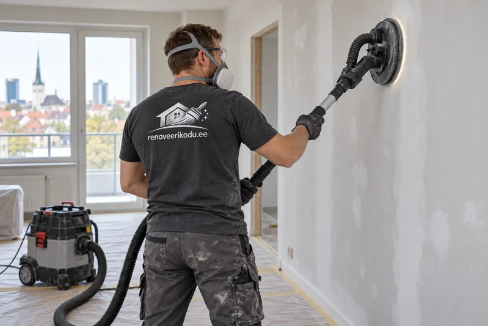
3. Lihvimine ja tolmu eemaldamine
Kuivanud pahtli lihvime ning eemaldame tolmu. Tolmueemaldusega lihvija aitab tööala puhtamana hoida; enne kruntimist kontrollime pinna siledust ja tugevust.
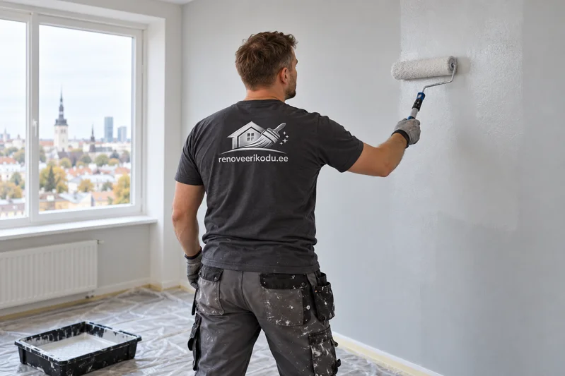
4. Aluspinnale sobiv krunt
Krundi valime aluspinna ja viimistlusvärvi järgi. Krunt aitab ühtlustada imavust ja parandada naket; järgmise etapiga alustame tootja juhendi järgi.
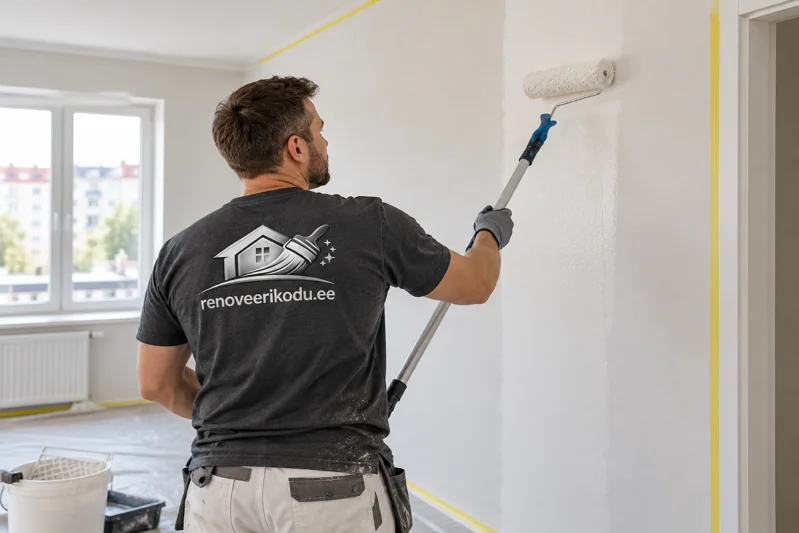
5. Viimistlusvärvimine
Värvime seinad ja laed kokkulepitud värvisüsteemiga, järgides kihtidevahelisi kuivamisaegu. Lõpus kontrollime katvust, servasid ja pindade ühtlust ning koristame tööala.
Maalritööde hinnapakkumine
Maalritöö hind sõltub sellest, kas pind vajab ainult värskendust või tuleb teha põhjalik eeltöö. Lauspahteldus, pragude parandamine, vana värvi eemaldamine, kruntimine ja mitme tooniga lahendus muudavad töömahtu. Pakkumiseks on kasulik saata fotod seintest, lagedest, nurkadest ja kohtadest, kus pind on pragunenud või laineline.
Lõppviimistluse juures kontrollime pindu nii otsevalguses kui ka külgvalguses. See aitab märgata pahtlijälgi, rullitriipe ja ebatasaseid üleminekuid enne töö üleandmist. Kui maalritöö on seotud tapeetimise, paneelide paigalduse või parketi paigaldusega, planeerime kaitsmise ja tööjärjekorra eraldi.
Kohalik kogemus ja tööde täpsustamine
Maalritöödel on oluline arvestada korteri või äripinna kasutust, sest üüripind, kodu ja büroo vajavad erinevat kulumiskindlust ning pesuklassi. Päringu hindamisel vaatame alati, milline on objekti ligipääs, kas töö toimub elatud ruumis, millised pinnad vajavad kaitsmist ja milline on mõistlik tööjärjekord. See aitab vältida olukorda, kus üks etapp tuleb hiljem uuesti avada või parandada.
Anname enne töö alustamist selge ja realistliku hinnangu. Kui fotodest ei piisa, lepime kokku objekti ülevaatuse. Nii saab materjalid, ajakulu, seotud tööd ja võimalikud riskikohad enne alustamist täpsustada.
Maalritööde hinnad
Maalritööde hind sõltub pinna seisukorrast. Lihtne värskendus on kiirem, kuid pragude parandamine, lauspahteldus, lihvimine, kruntimine ja mitme värvikihi tegemine muudavad töömahtu. Täpsemaks hinnaks saada fotod seintest ja lagedest.
Hinnapäringu kiirendamiseks lisa võimalusel fotod, mõõdud, objekti asukoht ja soovitud tähtaeg. Nii saame paremini aru, kas töö vajab objektikülastust või saab esmase hinnangu anda kirjelduse põhjal.
Milline värv, pahtel ja aluskrunt valida?
Hea maalritöö algab omavahel sobivast materjalisüsteemist. Valikul arvestame aluspinna, ruumi niiskuse, puhastamisvajaduse ja soovitud läikega. Värvi tootjanimi üksi ei määra sobivust: sama tootja valikus on eri otstarbega tooted.
Seinavärvid: matt pind ja pesukindlus
Täismatt värv annab rahuliku pinna ja muudab väiksemad ebatasasused vähem märgatavaks. Läikivam pind toob külgvalguses aluspinna vead rohkem esile. Pesukindlust tuleb vaadata tootelehelt eraldi: ka täismatt värv võib olla hästi puhastatav. Esikus ja köögis on oluline kulumiskindlus, elutoas ja magamistoas ka valgus ning tooni üldmulje.
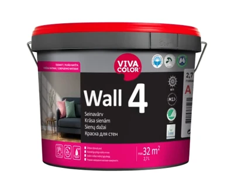
Vivacolor Wall 4 on täismatt seinavärv, mille märghõõrdekindlus on tootja järgi klass 1 standardi EN 13300 alusel. Sobiv valik, kui soovid matti, kuid puhastatavat pinda. Tootja annab ülevärvimisajaks 2 tundi temperatuuril +23 °C ja 50% suhtelise õhuniiskuse juures. Wall 4 tooteinfo.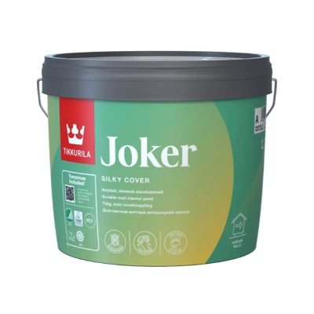
Tikkurila Joker on pesemiskindel matt sisevärv kuivade ruumide seintele ja lagedele. Selle eelis on puhastatav pind ning M1-emissiooniklass ja ökomärgised. Tootja järgi on pind ülevärvitav ligikaudu 1–2 tunni pärast tavatingimustes; töö planeerimisel lähtume konkreetsest tootelehe versioonist ja objekti oludest. Jokeri tooteinfo.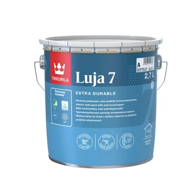
Tikkurila Luja 7 on matt sisevärv suurema puhastus- ja niiskuskoormusega ruumidesse. Sisaldab hallitusvastast ainet ja sobib tootja järgi näiteks vannitoa värvitavatele pindadele. Ülevärvimisaeg on ligikaudu 4 tundi tavatingimustes. Niiskuskindel värv ei asenda märgruumi nõutavat veetõkkesüsteemi ega kõrvalda niiskuse põhjust. Luja 7 tooteinfo.
Need on sobivad tootenäited, mitte kohustuslik ostunimekiri. Laele valime vajadusel eraldi laevärvi; ustele, liistudele ja mööblile nendele pindadele mõeldud värvi. Tooni vaatame proovipinnal nii päeva- kui tehisvalguses. Lõplikud tooted ja toonid lepime kokku enne töö alustamist.
Pahtlid: vuugi täitmine ja peenviimistlus on eri tööd
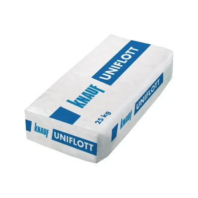
Vuugi- ja täitepahtel on vajalik kipsplaadivuukidele, kruvipeadele ja sügavamatele parandustele. Näiteks Knauf Uniflott kuulub kipsplaadisüsteemi vuugipahtlite hulka. Vuugilindi vajadus sõltub plaadiservast ja tootja süsteemist. Segu tardumine ei tähenda veel, et pind on värvimiseks kuiv.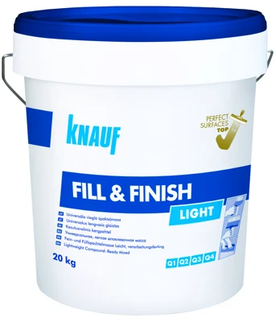
Kasutusvalmis kergpahtel, näiteks Knauf Fill & Finish Light, sobib kuivades ruumides pinna silumiseks ja süsteemi järgi ka vuugitöödeks. Seda ei pea pulbrist segama; õhu käes kuivava pahtli kuivamisaega mõjutavad kihipaksus, temperatuur ja niiskus. Sügavat lohku ei täideta peenviimistluspahtliga üle lubatud kihipaksuse. Knaufi kergpahtli tooteinfo.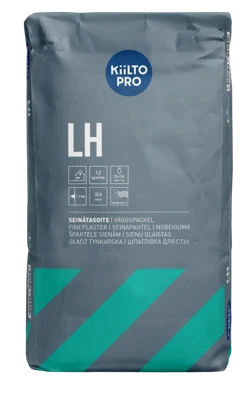
Kuiva ruumi peenpahtel Kiilto LH sobib seinte ja lagede lõppviimistluseks 1–2 mm kihina. Tootja järgi kuivab see umbes ühe ööpäevaga +18 °C juures, sõltuvalt tingimustest. See ei ole märgruumi ega plaadialune pahtel. Kiilto LH tooteinfo.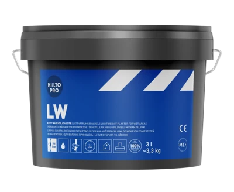
Niiskuskindel pahtel valitakse niiskema ruumi ja järgneva viimistlussüsteemi järgi. Näiteks Kiilto Pro LW on kasutusvalmis pahtel kuivadesse ja märgadesse siseruumidesse, lubatud kihipaksusega kuni 4 mm. Selle tehniline info annab kuivamisajaks ligikaudu 2–3 tundi millimeetri kohta +18 °C juures; niiskes või jahedas ruumis võib see pikeneda. Pahtel ise ei asenda hüdroisolatsiooni. Kiilto Pro LW tooteinfo.
Knaufi pahtlite ja viimistlustasemete juhend aitab eristada vuugitööd ja lauspahteldust. Nõudliku külgvalguse või sileda värvipinna puhul lepime vajaliku viimistlustaseme enne tööd kokku. Konstruktsiooni liikumisest tekkinud pragu vajab põhjuse hindamist, mitte ainult uut pahtlikihti.
Korralik aluskrunt: millal ja miks seda vaja on?
Uus, pahteldatud, poorne või ebaühtlaselt imav pind vajab värvisüsteemile sobivat aluskrunti. See aitab ühtlustada imavust ja parandada naket, et lõppvärv ei jääks laiguline. Krunt ei asenda tolmu eemaldamist ega kinnita lahtist värvikihti: alus peab olema puhas, kuiv ja piisavalt tugev.
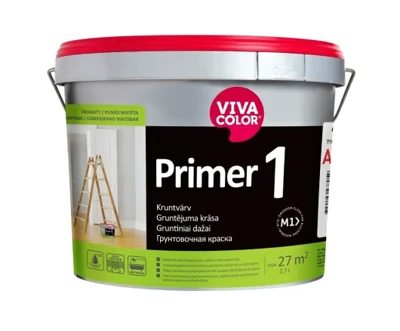
Kruntvärv värvi alla aitab luua ühtlase aluspinna. Näiteks Vivacolor Primer 1 sobib tootja juhendi järgi sisevärvimise aluskrundiks ning on +23 °C ja 50% suhtelise õhuniiskuse juures ülevärvitav umbes 2 tunni pärast. Primer 1 tooteinfo.- Imavust reguleeriv krunt enne pahteldust valitakse pahtli ja aluspinna juhendi järgi. See ei ole automaatselt sama toode mis viimistlusvärvi aluskrunt.
- Nakke- või isoleerkrunt võib olla vajalik kõval läikival pinnal või läbikumavate plekkide puhul. Vee-, tahma- ja roosteplekkide korral hindame kõigepealt põhjuse ning valime sobiva eritoote.
Kuivamisaeg ja täielik kõvenemine
Puutekuiv pind, ülevärvitav pind ja täielikult kõvenenud pind on erinevad etapid. Tootelehe aeg eeldab seal kirjeldatud temperatuuri, õhuniiskust ja kihipaksust. Jahe ruum, niiske õhk või paks pahtlikiht pikendavad ooteaega. Järgmise kihiga alustame alles sobival ajal; värskelt värvitud seina tugevamat pesemist väldime kuni toote juhendis lubatud kõvenemiseni.
Praktiline tööinfo maalritööde kohta
Materjalid
Maalritööde puhul on oluline valida õige pahtel, krunt ja värv vastavalt ruumi kasutusele. Köögis, esikus ja lastetoas on pestav värv praktilisem kui väga matt toon; niiskemates ruumides tuleb jälgida, et värvisüsteem sobiks koormusega.
Ajakulu
Ajakulu sõltub kihtide arvust ja kuivamisest. Pahteldus, lihvimine, kruntimine ja kaks värvikihti ei ole üks tööpäev, kui pind vajab korralikku parandust. Kiirustamine jätab nähtavad lihvimisjäljed, varjud ja ebaühtlase läike.
Hinnategurid
Hinda mõjutavad seina kõrgus, pinna seisukord, pragude parandused, nurkade ja lagede arv, värvitoonide vahetus ning see, kas mööbel ja põrandad vajavad kaitsmist.
Levinud vead
Levinud vead on krundi vahele jätmine, liiga väike kuivamisaeg, vale valguse all kontrollimata pind ja odava värvi kasutamine ruumis, kus pind peab taluma pesemist.
Soovitused kliendile
Hea tulemuse jaoks vali toon näidisega samas valguses, kus ruumi päriselt kasutatakse. Kui seintele tulevad riiulid, liistud või paneelid, tasub nende asukohad enne lõppvärvi kokku leppida.
Korduma kippuvad küsimused
Kas teete ainult värvimist või ka pahteldust?
Teeme mõlemat. Vajadusel teeme kohtparandused, lauspahtelduse, lihvimise, kruntimise ja lõppvärvimise.
Kui kaua maalritööd kestavad?
Kestus sõltub ruumide arvust, kuivamisaegadest ja pinna seisukorrast. Väiksemad tööd võtavad tihti mõne päeva, suuremad objektid vajavad täpsemat graafikut.
Kas klient peab materjalid ise ostma?
Soovi korral aitame materjalide valikul või lepime kokku, et vajalikud krundid, pahtlid ja värvid hangime meie.
Kas töötate möbleeritud korteris?
Jah, kuid töö kiirus ja hind sõltuvad sellest, kui palju on vaja mööblit kaitsta või liigutada.
Kas mööbel peab enne maalritöid ruumist väljas olema?
Ideaalis võiks ruum olla võimalikult tühi. Kui mööblit ei saa eemaldada, tuleb see koondada, katta ja jätta tööks piisav ligipääs seintele ning lagedele.
Kas värvitooni saab valida töö käigus?
Parem on toon enne töö algust kinnitada, sest värvi tellimine, prooviala ja kuivamisjärgne toon võivad ajagraafikut mõjutada. Vajadusel teeme proovipinna enne kogu seina värvimist.
Miks on kruntimine vajalik?
Krunt ühtlustab pinna imavust ja parandab värvi naket. Ilma krundita võib lõpptulemus jääda laiguline või vajada rohkem värvikihte.
Kas parandate ka seinapraod?
Jah, kuid oluline on aru saada, kas pragu on ainult viimistluskihis või liigub konstruktsioon. Liikuv pragu võib vajada teistsugust lahendust kui tavaline pahtliparandus.
Kas tehtud töödele kehtib garantii?
Jah. RK Meistrid OÜ tehtud ehitus- ja viimistlustöödele kehtib 3-aastane garantii. Konkreetse töö sisu ja kokkulepitud tingimused fikseeritakse hinnapakkumises.
Milliste töödega maalritööd tavaliselt seostuvad?
Maalritööd jõuavad tavaliselt lõppviimistluse etappi pärast seda, kui seinad, laed ja avad on ette valmistatud. Kui pind vajab ehituslikku parandust, algab töö tihti kipsplaadi ja karkassi korrigeerimisest; dekoratiivsema tulemuse puhul võib maalritööle järgneda tapeedi paigaldus või aktsentsein. Eelarve võrdlemiseks aitab siseviimistluse hinnakirja vaade.